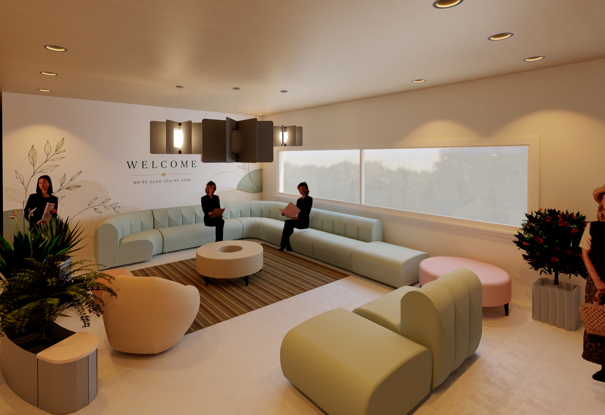

Our Story
Arx Renouer is a concept-driven interior design studio based in Frisco, Texas, serving the Dallas–Fort Worth area. We design residential and commercial spaces — homes, hospitality, senior living, workplace, and retail.
Every project begins with the client’s story. That story becomes a clear design concept, and the concept guides every decision — from space planning and materials to lighting, furniture, and the final detail.

From Concept to Reality
We listen to your story, goals, and site, and translate them into a clear design concept.
The concept is refined through space plans, materials, lighting, and 3D visualization.
Coordinated drawings and specifications make the concept buildable.
Procurement, site coordination, and installation bring the concept to life.
Founder
Founder & Principal Designer
Srilakshmi leads every project from the first conversation to final installation. Before interior design, she built a career in software engineering, with graduate studies in computer science and a degree in mechanical engineering — a background that shapes a studio that thinks in systems while never losing sight of the human story.
She is completing the Certificate Program in Interior Design and Interior Architecture at UC Berkeley, and her work received the 2026 IIDA Texas/Oklahoma Chapter Design Excellence Award (Student Commercial).
Every space begins with a story and a clear design idea.
Revit documentation and 3D visualization at every stage.
Accessibility, comfort, dignity, and well-being in every plan.